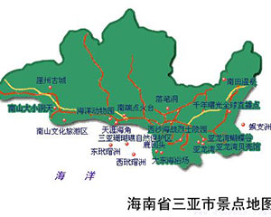

中文名称：三亚
外文名称：Sanya
下辖地区：吉阳区、崖州区、天涯区、海棠区
政府驻地：三亚市吉阳区新风街257号
城市名片：美丽三亚、浪漫天涯
邮政区码：572000
地理位置：海南岛南端[
面 积：1919.58平方公里

南山文化旅游区
南山，面朝南海，坐落在中国唯一的热带滨海城市——三亚市的西南40公里处，是中国最南端的山。南山历来被称为吉祥福泽之地。据佛教经典记载，救苦救难的观音菩萨为了救度芸芸众生，发了十二大愿，其中第二愿即是“常居南海愿”。唐代著名大和尚鉴真法师为弘扬佛法五次东渡日本未果，第五次漂流到南山，在此居住一年半之久并建造佛寺，传法布道，随后第六次东渡日本终获成功。日本第一位遣唐僧空海和尚也在此登陆中国，驻足传法。中国传扬千古的名句“福如东海，寿比南山”则更道出了南山与福寿文化的悠久渊源。
南山寺也是建国后国务院首次批准的新建的最年轻的寺庙。站在寺前的观海平台远眺，依稀可见几座大山在云雾中若隐若现，这时你会感到李白“忽闻海上有仙山，山在虚无缥缈间”的诗句用在此处再合适不过。海面上几叶轻舟在微波中荡漾，描绘出一幅蓬莱仙境的图案.而南山寺最著名的是创造世界之最，高达3.8米，价值1.92亿元人民币的世界手工艺之一绝的国宝——世界首尊金玉观世音菩萨塑像，因其奇绝的艺术魅力和观世音菩萨与南山的殊缘吸引着八方游人.南山寺无处不在显示着博大精深的佛教文化和中国传统文化，是世所罕见，震惊世界的佛教名山胜地
友情链接：三亚官网